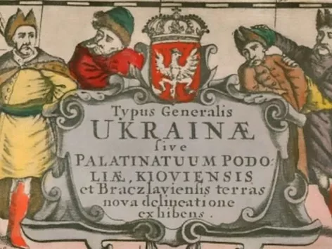
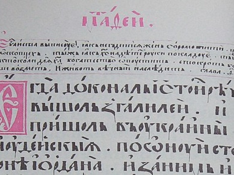
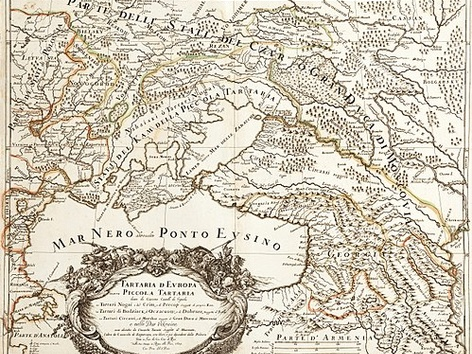

Серце Східної Європи — країна з багатою історією, сильною культурою та великим потенціалом.
Україна — це поєднання сучасних міст, родючих земель і мальовничої природи. Від Карпати до узбережжя Чорного моря — країна вражає різноманіттям ландшафтів і можливостей.
Сильні традиції, динамічний ІТ-сектор і стратегічне розташування роблять Україну важливим гравцем у Європі.
Основні відомості
Україна - це незалежна, парламентсько-президентська республіка в південно-східній частині Европи.
Найвищим органом державної влади є Верховна Рада України, а главою держави - Президент України. Державною мовою є українська, державною валютою - гривня;
Територія країни сягає 603 549 км², що робить Україну - найбільшою країною в Европі. За площею Україна займає 44 місце в світі.
Столицею є місто Київ - найбільше місто України і одне з найстаріших в Европі;
- Незалежність: 1991 рік (після розпаду СРСР)
- Має вихід до Чорного та Азовського морів
- Найбільші річки: Дніпро, Дністер
- Гори: Карпати на заході
- Традиційні страви - борщ, вареники
Як з'явилася назва "Україна": історія та міфи

Вперше назва "Україна" з'явилася в літописах "Повість минулих літ" у 1187 році, але наша держава офіційно так називалася лише в 19 столітті. Дізнайтеся, звідки походить назва "Україна" та які міфи російська пропаганда створює навколо неї
Історія України дуже давня, цікава і наповнена великою кількістю подій. Однак окремою сторінкою у становленні держави можна виділити появу її назви. Як же зʼявилась назва “Україна”? Яке її значення? Про походження та становлення назви “Україна” розповідаємо далі.
Звідки походить назва “Україна”
Походження назви “Україна” здавна привертало увагу вчених, але єдиного пояснення й досі немає. Одні дослідники повʼязували її зі словами край, тобто “найвіддаленіша від центру частину території”, інші – з іменниками край, країна у значенні “рідний край, своя країна, рідна земля”. Існує ще один погляд, за яким назва Україна нібито походить від дієслова украяти (відрізати), тобто первісне значення цієї назви – “шматок землі, украяний (відрізаний) від цілого, який згодом сам став цілим (окремою країною)”.
Оскільки словʼянські племена споконвіку мали свої території, які здебільшого відділялися природними рубежами – річками, лісами, болотами, солончаками (отже, ніякої мішанини племен не було), давньословʼянське слово край “відрізок, шматок землі” набуло нового значення – “територія, що належить племені”.
Перша поява назви “Україна”
“Україна” – єдина назва території, заселеної українським народом. Вперше слово зʼявилось в Іпатіївському списку “Повісті минулих літ”, де літописець розповідає про смерть переяславського князя Володимира Глібовича у 1187 році: “І плакали по ньому всі переяславці... За ним же Україна багато потужила”.

Уривок із Пересопницького Євангелія (1556) в якому трапляється слово “Україна”
“Україна” за часів козаків
З розвитком Козаччини в 16 столітті назва “країна” стає географічною назвою козацької території, яка охоплювала широкі простори Наддніпрянщини – Правобережної й Лівобережної.
Особливого політичного значення назва “Україна” набирає в період Хмельниччини. Хоч офіційна назва Козацько-Гетьманської Держави XVII-XVIII століття була “Військо Запорозьке” (з різними варіантами), але її територія була “козацька земля”, яка звичайно і в українській і в польській практиці — називалась Україною.

Карта “Європейської Татарії або Малої Татарії” італійця Джакомо Кантеллі да Віньола (1688). Наддніпрянщина показана як “Україна або край запорозьких козаків”
Саме тому, назви Україна, український, український народ щораз частіше вживалися в політичному і культурному житті Гетьманщини. Зустрічаємо їх в актах і документах Б. Хмельницького, І. Виговського, П. Дорошенка, І. Самойловича, І. Мазепи, П. Орлика. Старшина Дорошенко в листі до Запоріжжя 1671 писав про “всю Україну”, “народ наш український”, “укр. міста” тощо.
Цю назву залюбки вживав і в офіційних актах і в приватних листах гетьман Пилип Орлик. У договорі з Кримом 1711 Орлик титулується “dux Ucrainae”.
Відомою й популярною в Західній Європі ця назва стала завдяки також другому виданню “Description d’Ukrainie” військового інженера Гійом Левассер де Боплана у 1661 році.
Після Андрусівської угоди 1667 і поділу України між Москвою та Польщею, з’являються назви “сьогобічна” й “тогобічна” Україна, а для Лівобережжя ще “Малоросійська Україна”.
Хоч назва “Україна” широко вживалася на Гетьманщині XVII-XVIII століттях, поза її межами, вона не стала офіційною назвою Української держави, адже нею й надалі залишилося “Військо Запорозьке” або, частини, які перебували під російським впливом, “Малоросія”.
Дізнайтеся більше тутКорисні копалини України
Корисні копалини України вирізняються значним різноманіттям і багатством, що зумовлено її геологічною будовою. На території країни зосереджені великі запаси паливних, рудних і нерудних ресурсів, які мають важливе значення для розвитку промисловості та економіки. Україна є однією з провідних країн Європи за запасами залізних і марганцевих руд, а також має поклади вугілля, природного газу, солей та будівельних матеріалів. Раціональне використання цих ресурсів є важливим фактором економічного зростання та енергетичної незалежності країни.
- Паливні:
- кам’яне вугілля
- буре вугілля
- нафта
- природний газ
- торф
- Рудні (металічні):
- залізні руди
- марганцеві руди
- уранові руди
- титанові руди
- нікелеві руди
- алюмінієві (боксити — обмежено)
- Нерудні (неметалічні):
- кам’яна сіль
- калійні солі
- сірка
- каолін
- графіт
- кварцові піски
- глина
- вапняк
- гіпс
- крейда